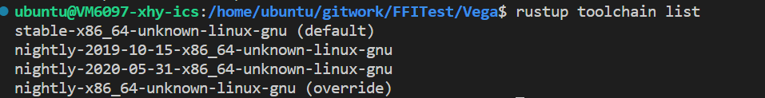
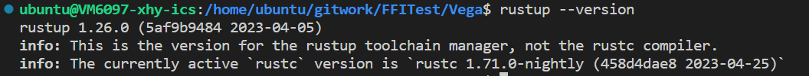

单机部署指南
以下为我个人编译vega时的经验，不保证成功。如有问题，请在群中详细询问或自己解决。(为本机运行，多机运行需要修改hosts.conf等，暂不考虑)
- 推荐使用linux系统运行（windows系统可以尝试，但可能在部分环节略有不同，需要自己摸索）
- 从该仓库抓取修改过后的版本，原代码中的问题应该已经解决了。
- 关于rust的版本，请选择 rust nightly ，具体版本请参考这里：


推荐rustup default stable（日常开发用稳定版），在vega目录下
rustup override set nightly重载为nightly格式。 - 如果出现
error: failed to run custom build command foropenssl-sys v0.9.52`错误，请按照提示下载openssl即可：
# On Ubuntu
sudo apt-get install libssl-dev
# On Arch Linux
sudo pacman -S openssl
# On Fedora
sudo dnf install openssl-devel
如果下载后仍有此错误，解决方法未知。
- 在家目录下(
echo $HOME)，创建hosts.conf文件，内容同config - 需要安装capnpc（根据错误提示安装(似乎需要sudo apt-get install)）
- 通过
cargo run（main.rs文件已添加，为make_rdd.rs内容）或cargo run --example make_rdd(测试文件在"../../examples"文件夹中，这里以make_rdd.rs示例)
欢迎提出问题与补充
条件编译使用
在Cargo.toml
[features]
default=["hdrs_valid"]
hdrs_valid=[]
# aws_connectors = ["rusoto_core", "rusoto_s3"]
在default前加'#'表示注释，使得条件编译生效，忽略hdrs的编译. 去除'#'表示有hdrs_valid可用，条件编译会使得hdrs相关的模块正常编译.